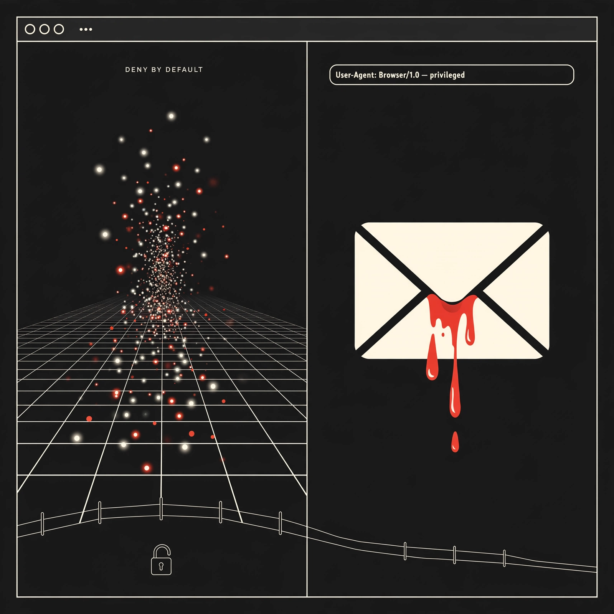

[767]
Claude Code v2.1.319 moves MCP tasks to background, adds deny-instead-of-prompting, fixes worktree sandbox escape and Bash prefix bypass [announced-live]
Daily digest

Watch [771] — fetch: OpenAI help center GPT deprecation notice + dated migration docs — dated Dec 11 shutdown claimed only in secondary blog, need primary before builds migrate.
Watch [778] — fetch: Google Gemini API pricing/changelog for omni-1.1-flash reroute and Veo 3.1 Flow retirements — secondary report only, dates/rates unconfirmed.
Watch [782] — fetch: Hugging Face PrunaAI/P-H3-Image + license + Comfy repos — claimed open distill names repos but item links no primary weights/license page.
Watch [773] — need primary artifact: Anthropic memory post + CL-Bench/Pokemon eval numbers vendor-reported only.
Watch [774] — need dated primary announcement: Claude Enterprise security center/EDR/admin.claude.com beta, no vendor changelog linked.
Watch [769] — need primary URL / live-link proof: claimed-live cloud env + proxy keys but docs link missing.
Watch [775] — need dated primary announcement: Muse Spaces launch via Meta newsroom + TechCrunch, claimed live but no primary URL in item.
Watch [776] — need dated primary announcement: Muse Mexico launch, vendor-social only, no primary page.
Watch [779] — [older] 2026-10-30 — need primary URL: Gemini Computer Use GA claimed via secondary changelog summary.
Watch [780] — need primary URL / live-link proof: Kimi K3.1 Pro Highspeed live on Bedrock claimed, no AWS listing/pricing linked.
Watch [781] — need primary URL / live-link proof: Music 3 open-weights claimed, no HF repo/license linked.
Watch [783] — need primary URL: ZCode v3.17.2 versioned release, no GitHub release page linked.
Watch [785] — need primary artifact: Mistral 133-agent Django demo count/video, no primary artifact linked.
Watch [772] — need primary URL: dots default-on Nov 18 + billing claimed via help-article summary only.